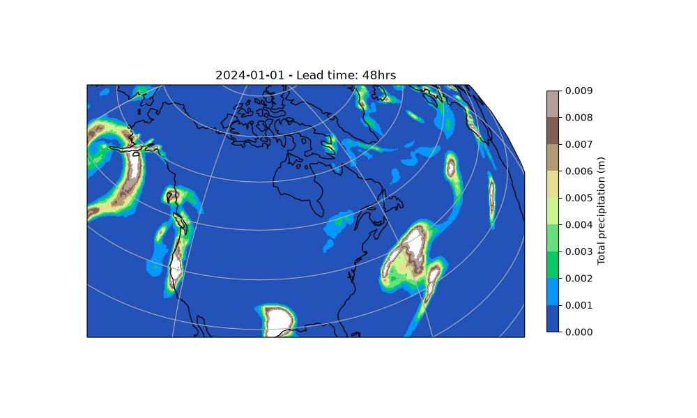

Running Diagnostic Inference¶
Basic prognostic + diagnostic inference workflow.
This example will demonstrate how to run a deterministic inference workflow that couples a prognostic model with a diagnostic model. This diagnostic model will predict a new atmospheric quantity from the predicted fields of the prognostic.
In this example you will learn:
- How to instantiate a prognostic model
- How to instantiate a diagnostic model
- Creating a data source and IO object
- Running the built in diagnostic workflow
- Post-processing results
Set Up¶
For this example, the built in diagnostic workflow earth2studio.run.diagnostic
will be used.
# SPDX-FileCopyrightText: Copyright (c) 2024-2026 NVIDIA CORPORATION & AFFILIATES.
# SPDX-FileCopyrightText: All rights reserved.
# SPDX-License-Identifier: Apache-2.0
#
# Licensed under the Apache License, Version 2.0 (the "License");
# you may not use this file except in compliance with the License.
# You may obtain a copy of the License at
#
# http://www.apache.org/licenses/LICENSE-2.0
#
# Unless required by applicable law or agreed to in writing, software
# distributed under the License is distributed on an "AS IS" BASIS,
# WITHOUT WARRANTIES OR CONDITIONS OF ANY KIND, either express or implied.
# See the License for the specific language governing permissions and
# limitations under the License.
from collections import OrderedDict
from datetime import datetime
from math import ceil
import numpy as np
import torch
from loguru import logger
from tqdm import tqdm
from earth2studio.data import DataSource, ForecastSource, fetch_data
from earth2studio.io import IOBackend
from earth2studio.models.dx import DiagnosticModel
from earth2studio.models.px import PrognosticModel
from earth2studio.perturbation import Perturbation
from earth2studio.utils.checkpoint import (
Checkpoint,
CheckpointSession,
NullCheckpoint,
)
from earth2studio.utils.coords import CoordSystem, map_coords, split_coords
from earth2studio.utils.time import to_time_array
logger.remove()
logger.add(lambda msg: tqdm.write(msg, end=""), colorize=True)
def deterministic(
time: list[str] | list[datetime] | list[np.datetime64],
nsteps: int,
prognostic: PrognosticModel,
data: DataSource,
io: IOBackend,
output_coords: CoordSystem = OrderedDict({}),
device: torch.device | None = None,
verbose: bool = True,
checkpoint: Checkpoint | CheckpointSession | NullCheckpoint = NullCheckpoint(),
) -> IOBackend:
"""Built in deterministic workflow.
This workflow creates a determinstic inference pipeline to produce a forecast
prediction using a prognostic model.
Parameters
----------
time : list[str] | list[datetime] | list[np.datetime64]
List of string, datetimes or np.datetime64
nsteps : int
Number of forecast steps
prognostic : PrognosticModel
Prognostic model
data : DataSource
Data source
io : IOBackend
IO object
output_coords: CoordSystem, optional
IO output coordinate system override, by default OrderedDict({})
device : torch.device, optional
Device to run inference on, by default None
verbose : bool, optional
Print inference progress, by default True
checkpoint : Checkpoint, optional
Checkpoint manager or checkpoint session used to record and resume workflow
progress, by default no checkpoint
Returns
-------
IOBackend
Output IO object
"""
logger.info("Running simple workflow!")
# Load model onto the device
device = (
device
if device is not None
else torch.device("cuda" if torch.cuda.is_available() else "cpu")
)
logger.info(f"Inference device: {device}")
prognostic = prognostic.to(device)
prognostic_ic = prognostic.input_coords()
time = to_time_array(time)
# Set up IO backend
total_coords = prognostic.output_coords(prognostic.input_coords()).copy()
for key, value in prognostic.output_coords(
prognostic.input_coords()
).items(): # Scrub batch dims
if value.shape == (0,):
del total_coords[key]
total_coords["time"] = time
total_coords["lead_time"] = np.asarray(
[
prognostic.output_coords(prognostic.input_coords())["lead_time"] * i
for i in range(nsteps + 1)
]
).flatten()
total_coords.move_to_end("lead_time", last=False)
total_coords.move_to_end("time", last=False)
for key, value in total_coords.items():
total_coords[key] = output_coords.get(key, value)
var_names = total_coords.pop("variable")
io.add_array(total_coords, var_names)
with checkpoint as ckpt:
restart_step = None
if ckpt.exists and ckpt.write_count > 0:
if ckpt.catalog.level < 2:
logger.warning(
"deterministic received checkpoint level "
f"{ckpt.catalog.level}; component state may not be "
"complete enough to resume a rollout. Re-running from "
"lead time zero."
)
else:
restart_step = ckpt.write_count - 1
if restart_step >= nsteps:
logger.success("\nInference complete")
return io
# Fetch data from data source and load onto device
if hasattr(prognostic, "interp_method"):
interp_to = prognostic_ic
interp_method = prognostic.interp_method
else:
interp_to = None
interp_method = "nearest"
x, coords = fetch_data(
source=data,
time=time,
variable=prognostic_ic["variable"],
lead_time=prognostic_ic["lead_time"],
device=device,
interp_to=interp_to,
interp_method=interp_method,
)
logger.success(f"Fetched data from {data.__class__.__name__}")
# Map lat and lon if needed
x, coords = map_coords(x, coords, prognostic.input_coords())
# Create prognostic iterator
model = prognostic.create_iterator(x, coords)
logger.info("Inference starting!")
initial_progress = 0 if restart_step is None else restart_step + 1
with tqdm(
total=nsteps + 1,
initial=initial_progress,
desc="Running inference",
position=1,
disable=(not verbose),
) as pbar:
for local_step, (x, coords) in enumerate(model):
step = (
local_step
if restart_step is None
else restart_step + local_step + 1
)
current_lead_time = coords["lead_time"][-1]
# Subselect domain/variables as indicated in output_coords
x, coords = map_coords(x, coords, output_coords)
io.write(*split_coords(x, coords))
ckpt.write(lead_time=current_lead_time)
pbar.update(1)
if step == nsteps:
break
ckpt.flush()
logger.success("\nInference complete")
return io
def diagnostic(
time: list[str] | list[datetime] | list[np.datetime64],
nsteps: int,
prognostic: PrognosticModel,
diagnostic: DiagnosticModel,
data: DataSource | ForecastSource,
io: IOBackend,
output_coords: CoordSystem = OrderedDict({}),
device: torch.device | None = None,
verbose: bool = True,
checkpoint: Checkpoint | CheckpointSession | NullCheckpoint = NullCheckpoint(),
) -> IOBackend:
"""Built in diagnostic workflow.
This workflow creates a determinstic inference pipeline that couples a prognostic
model with a diagnostic model.
Parameters
----------
time : list[str] | list[datetime] | list[np.datetime64]
List of string, datetimes or np.datetime64
nsteps : int
Number of forecast steps
prognostic : PrognosticModel
Prognostic model
diagnostic: DiagnosticModel
Diagnostic model, must be on same coordinate axis as prognostic
data : DataSource | ForecastSource
Data source
io : IOBackend
IO object
output_coords: CoordSystem, optional
IO output coordinate system override, by default OrderedDict({})
device : torch.device, optional
Device to run inference on, by default None
verbose : bool, optional
Print inference progress, by default True
checkpoint : Checkpoint, optional
Checkpoint manager or checkpoint session used to record and resume workflow
progress, by default no checkpoint
Returns
-------
IOBackend
Output IO object
"""
logger.info("Running diagnostic workflow!")
device = (
device
if device is not None
else torch.device("cuda" if torch.cuda.is_available() else "cpu")
)
logger.info(f"Inference device: {device}")
prognostic = prognostic.to(device)
diagnostic = diagnostic.to(device)
prognostic_ic = prognostic.input_coords()
diagnostic_ic = diagnostic.input_coords()
time = to_time_array(time)
total_coords = prognostic.output_coords(prognostic.input_coords())
for key, value in prognostic.output_coords(
prognostic.input_coords()
).items(): # Scrub batch dims
if key in diagnostic.output_coords(diagnostic_ic):
total_coords[key] = diagnostic.output_coords(diagnostic_ic)[key]
if value.shape == (0,):
del total_coords[key]
total_coords["time"] = time
total_coords["lead_time"] = np.asarray(
[
prognostic.output_coords(prognostic.input_coords())["lead_time"] * i
for i in range(nsteps + 1)
]
).flatten()
total_coords.move_to_end("lead_time", last=False)
total_coords.move_to_end("time", last=False)
for key, value in total_coords.items():
total_coords[key] = output_coords.get(key, value)
var_names = total_coords.pop("variable")
io.add_array(total_coords, var_names)
with checkpoint as ckpt:
restart_step = None
if ckpt.exists and ckpt.write_count > 0:
if ckpt.catalog.level < 2:
logger.warning(
"diagnostic received checkpoint level "
f"{ckpt.catalog.level}; component state may not be "
"complete enough to resume a rollout. Re-running from "
"lead time zero."
)
else:
restart_step = ckpt.write_count - 1
if restart_step >= nsteps:
logger.success("\nInference complete")
return io
if hasattr(prognostic, "interp_method"):
interp_to = prognostic_ic
interp_method = prognostic.interp_method
else:
interp_to = None
interp_method = "nearest"
x, coords = fetch_data(
source=data,
time=time,
variable=prognostic_ic["variable"],
lead_time=prognostic_ic["lead_time"],
device=device,
interp_to=interp_to,
interp_method=interp_method,
)
logger.success(f"Fetched data from {data.__class__.__name__}")
x, coords = map_coords(x, coords, prognostic_ic)
model = prognostic.create_iterator(x, coords)
logger.info("Inference starting!")
initial_progress = 0 if restart_step is None else restart_step + 1
with tqdm(
total=nsteps + 1,
initial=initial_progress,
desc="Running inference",
position=1,
disable=(not verbose),
) as pbar:
for local_step, (x, coords) in enumerate(model):
step = (
local_step
if restart_step is None
else restart_step + local_step + 1
)
current_lead_time = coords["lead_time"][-1]
x, coords = map_coords(x, coords, diagnostic_ic)
x, coords = diagnostic(x, coords)
x, coords = map_coords(x, coords, output_coords)
io.write(*split_coords(x, coords))
ckpt.write(lead_time=current_lead_time)
pbar.update(1)
if step == nsteps:
break
ckpt.flush()
logger.success("\nInference complete")
return io
def ensemble(
time: list[str] | list[datetime] | list[np.datetime64],
nsteps: int,
nensemble: int,
prognostic: PrognosticModel,
data: DataSource,
io: IOBackend,
perturbation: Perturbation,
batch_size: int | None = None,
output_coords: CoordSystem = OrderedDict({}),
device: torch.device | None = None,
verbose: bool = True,
checkpoint: Checkpoint | CheckpointSession | NullCheckpoint = NullCheckpoint(),
) -> IOBackend:
"""Built in ensemble workflow.
Parameters
----------
time : list[str] | list[datetime] | list[np.datetime64]
List of string, datetimes or np.datetime64
nsteps : int
Number of forecast steps
nensemble : int
Number of ensemble members to run inference for.
prognostic : PrognosticModel
Prognostic models
data : DataSource
Data source
io : IOBackend
IO object
perturbation : Perturbation
Method to perturb the initial condition to create an ensemble.
batch_size: int, optional
Number of ensemble members to run in a single batch,
by default None.
output_coords: CoordSystem, optional
IO output coordinate system override, by default OrderedDict({})
device : torch.device, optional
Device to run inference on, by default None
verbose : bool, optional
Print inference progress, by default True
checkpoint : Checkpoint, optional
Checkpoint manager or checkpoint session used to record and resume workflow
progress, by default no checkpoint
Returns
-------
IOBackend
Output IO object
"""
logger.info("Running ensemble inference!")
device = (
device
if device is not None
else torch.device("cuda" if torch.cuda.is_available() else "cpu")
)
logger.info(f"Inference device: {device}")
prognostic = prognostic.to(device)
prognostic_ic = prognostic.input_coords()
time = to_time_array(time)
if hasattr(prognostic, "interp_method"):
interp_to = prognostic_ic
interp_method = prognostic.interp_method
else:
interp_to = None
interp_method = "nearest"
x0, coords0 = fetch_data(
source=data,
time=time,
variable=prognostic_ic["variable"],
lead_time=prognostic_ic["lead_time"],
device=device,
interp_to=interp_to,
interp_method=interp_method,
)
logger.success(f"Fetched data from {data.__class__.__name__}")
total_coords = prognostic.output_coords(prognostic.input_coords()).copy()
if "batch" in total_coords:
del total_coords["batch"]
total_coords["time"] = time
total_coords["lead_time"] = np.asarray(
[
prognostic.output_coords(prognostic.input_coords())["lead_time"] * i
for i in range(nsteps + 1)
]
).flatten()
total_coords.move_to_end("lead_time", last=False)
total_coords.move_to_end("time", last=False)
total_coords = {"ensemble": np.arange(nensemble)} | total_coords
for key, value in total_coords.items():
total_coords[key] = output_coords.get(key, value)
variables_to_save = total_coords.pop("variable")
io.add_array(total_coords, variables_to_save)
if batch_size is None:
batch_size = nensemble
batch_size = min(nensemble, batch_size)
with checkpoint as ckpt:
completed_ensembles = []
if ckpt.exists and not isinstance(ckpt, NullCheckpoint):
completed_ensembles = [
int(value) for value in ckpt.metadata.get("completed_ensembles", [])
]
completed = set(completed_ensembles)
start_batch_id = next(
(index for index in range(nensemble) if index not in completed),
nensemble,
)
number_of_batches = ceil((nensemble - start_batch_id) / batch_size)
restart_first_batch = (
ckpt.exists
and ckpt.write_count > 0
and start_batch_id < nensemble
and ckpt.lead_time != total_coords["lead_time"][-1]
)
logger.info(f"Starting {nensemble} Member Ensemble Inference with \
{number_of_batches} number of batches.")
for batch_index, batch_id in enumerate(
tqdm(
range(start_batch_id, nensemble, batch_size),
total=number_of_batches,
desc="Total Ensemble Batches",
position=2,
disable=(not verbose),
)
):
mini_batch_size = min(batch_size, nensemble - batch_id)
ensemble_coords = np.arange(batch_id, batch_id + mini_batch_size)
ensemble_members = [int(value) for value in ensemble_coords]
restart_step = None
if batch_index == 0 and restart_first_batch:
if ckpt.catalog.level < 2:
logger.warning(
"ensemble received checkpoint level "
f"{ckpt.catalog.level}; component state may not be "
"complete enough to resume a rollout. Re-running from "
"lead time zero."
)
ckpt.write_count = 0
else:
restart_step = ckpt.write_count - 1
if restart_step >= nsteps:
continue
elif not isinstance(ckpt, NullCheckpoint):
ckpt.write_count = 0
x = x0.to(device)
coords = OrderedDict({"ensemble": ensemble_coords}) | coords0.copy()
x = x.unsqueeze(0).repeat(mini_batch_size, *([1] * x.ndim))
x, coords = map_coords(x, coords, prognostic_ic)
x, coords = perturbation(x, coords)
model = prognostic.create_iterator(x, coords)
initial_progress = 0 if restart_step is None else restart_step + 1
with tqdm(
total=nsteps + 1,
initial=initial_progress,
desc=f"Running batch {batch_id} inference",
position=1,
leave=False,
disable=(not verbose),
) as pbar:
for local_step, (x, coords) in enumerate(model):
step = (
local_step
if restart_step is None
else restart_step + local_step + 1
)
current_lead_time = coords["lead_time"][-1]
x, coords = map_coords(x, coords, output_coords)
io.write(*split_coords(x, coords))
if step == nsteps:
completed.update(ensemble_members)
completed_ensembles = sorted(completed)
ckpt.write(
lead_time=current_lead_time,
completed_ensembles=completed_ensembles,
)
pbar.update(1)
if step == nsteps:
break
ckpt.flush()
logger.success("\nInference complete")
return io
Thus, we need the following:
- Prognostic Model: Use the built in FourCastNet Model
earth2studio.models.px.FCN. - Diagnostic Model: Use the built in precipitation AFNO model
earth2studio.models.dx.PrecipitationAFNO. - Datasource: Pull data from the GFS data api
earth2studio.data.GFS. - IO Backend: Save the outputs into a Zarr store
earth2studio.io.ZarrBackend.
import os
os.makedirs("outputs", exist_ok=True)
from dotenv import load_dotenv
load_dotenv() # TODO: make common example prep function
from earth2studio.data import GFS
from earth2studio.io import ZarrBackend
from earth2studio.models.dx import PrecipitationAFNO
from earth2studio.models.px import FCN
from earth2studio.utils.time import to_time_array
# Load the default model package which downloads the check point from NGC
package = FCN.load_default_package()
prognostic_model = FCN.load_model(package)
package = PrecipitationAFNO.load_default_package()
diagnostic_model = PrecipitationAFNO.load_model(package)
# Create the data source
data = GFS()
# Create the IO handler, store in memory
io = ZarrBackend()
Console output67 lines
/__w/earth2studio/earth2studio/.venv/lib/python3.13/site-packages/torch/cuda/__init__.py:64: FutureWarning: The pynvml package is deprecated. Please install nvidia-ml-py instead. If you did not install pynvml directly, please report this to the maintainers of the package that installed pynvml for you.
import pynvml # type: ignore[import]
WARNING[XFORMERS]: xFormers can't load C++/CUDA extensions. xFormers was built for:
PyTorch 2.10.0+cu128 with CUDA 1208 (you have 2.13.0+cu130)
Python 3.10.19 (you have 3.13.13)
Please reinstall xformers (see https://github.com/facebookresearch/xformers#installing-xformers)
Memory-efficient attention, SwiGLU, sparse and more won't be available.
Set XFORMERS_MORE_DETAILS=1 for more details
CuPy distance computation test failed with error: cuVS >= 24.12 or pylibraft < 24.12 should be installed to use this feature
Downloading config.json: 0%| | 0.00/22.0 [00:00<?, ?B/s]
Downloading config.json: 100%|██████████| 22.0/22.0 [00:00<00:00, 214B/s]
Downloading config.json: 100%|██████████| 22.0/22.0 [00:00<00:00, 211B/s]
Downloading fcn.mdlus: 0%| | 0.00/287M [00:00<?, ?B/s]
Downloading fcn.mdlus: 3%|▎ | 10.0M/287M [00:01<00:28, 10.3MB/s]
Downloading fcn.mdlus: 7%|▋ | 20.0M/287M [00:01<00:13, 21.4MB/s]
Downloading fcn.mdlus: 10%|█ | 30.0M/287M [00:01<00:08, 31.5MB/s]
Downloading fcn.mdlus: 14%|█▍ | 40.0M/287M [00:01<00:06, 40.5MB/s]
Downloading fcn.mdlus: 17%|█▋ | 50.0M/287M [00:01<00:05, 48.6MB/s]
Downloading fcn.mdlus: 21%|██ | 60.0M/287M [00:01<00:04, 51.3MB/s]
Downloading fcn.mdlus: 24%|██▍ | 70.0M/287M [00:02<00:05, 43.4MB/s]
Downloading fcn.mdlus: 28%|██▊ | 80.0M/287M [00:02<00:04, 47.5MB/s]
Downloading fcn.mdlus: 31%|███▏ | 90.0M/287M [00:02<00:04, 50.8MB/s]
Downloading fcn.mdlus: 35%|███▍ | 100M/287M [00:02<00:03, 51.6MB/s]
Downloading fcn.mdlus: 38%|███▊ | 110M/287M [00:02<00:03, 53.4MB/s]
Downloading fcn.mdlus: 42%|████▏ | 120M/287M [00:03<00:03, 52.8MB/s]
Downloading fcn.mdlus: 45%|████▌ | 130M/287M [00:03<00:03, 46.6MB/s]
Downloading fcn.mdlus: 49%|████▊ | 140M/287M [00:03<00:03, 47.1MB/s]
Downloading fcn.mdlus: 52%|█████▏ | 150M/287M [00:03<00:03, 47.2MB/s]
Downloading fcn.mdlus: 56%|█████▌ | 160M/287M [00:03<00:02, 49.8MB/s]
Downloading fcn.mdlus: 59%|█████▉ | 170M/287M [00:04<00:02, 50.7MB/s]
Downloading fcn.mdlus: 63%|██████▎ | 180M/287M [00:04<00:02, 53.5MB/s]
Downloading fcn.mdlus: 66%|██████▌ | 190M/287M [00:04<00:01, 58.1MB/s]
Downloading fcn.mdlus: 70%|██████▉ | 200M/287M [00:04<00:01, 50.0MB/s]
Downloading fcn.mdlus: 73%|███████▎ | 210M/287M [00:04<00:01, 52.8MB/s]
Downloading fcn.mdlus: 77%|███████▋ | 220M/287M [00:05<00:01, 56.0MB/s]
Downloading fcn.mdlus: 80%|████████ | 230M/287M [00:05<00:01, 60.0MB/s]
Downloading fcn.mdlus: 84%|████████▎ | 240M/287M [00:05<00:00, 63.2MB/s]
Downloading fcn.mdlus: 87%|████████▋ | 250M/287M [00:05<00:00, 62.4MB/s]
Downloading fcn.mdlus: 91%|█████████ | 260M/287M [00:05<00:00, 48.3MB/s]
Downloading fcn.mdlus: 94%|█████████▍| 270M/287M [00:06<00:00, 49.0MB/s]
Downloading fcn.mdlus: 97%|█████████▋| 280M/287M [00:06<00:00, 55.6MB/s]
Downloading fcn.mdlus: 100%|██████████| 287M/287M [00:06<00:00, 56.8MB/s]
Downloading fcn.mdlus: 100%|██████████| 287M/287M [00:06<00:00, 47.8MB/s]
Downloading global_means.npy: 0%| | 0.00/336 [00:00<?, ?B/s]
Downloading global_means.npy: 100%|██████████| 336/336 [00:00<00:00, 804B/s]
Downloading global_means.npy: 100%|██████████| 336/336 [00:00<00:00, 798B/s]
Downloading global_stds.npy: 0%| | 0.00/336 [00:00<?, ?B/s]
Downloading global_stds.npy: 100%|██████████| 336/336 [00:00<00:00, 871B/s]
Downloading global_stds.npy: 100%|██████████| 336/336 [00:00<00:00, 864B/s]
Downloading precipitation_afno.zip: 0%| | 0.00/261M [00:00<?, ?B/s]
Downloading precipitation_afno.zip: 8%|▊ | 19.9M/261M [00:00<00:01, 208MB/s]
Downloading precipitation_afno.zip: 17%|█▋ | 44.7M/261M [00:00<00:00, 238MB/s]
Downloading precipitation_afno.zip: 26%|██▌ | 67.4M/261M [00:00<00:00, 218MB/s]
Downloading precipitation_afno.zip: 35%|███▌ | 91.7M/261M [00:00<00:00, 231MB/s]
Downloading precipitation_afno.zip: 44%|████▍ | 114M/261M [00:00<00:00, 233MB/s]
Downloading precipitation_afno.zip: 54%|█████▍ | 141M/261M [00:00<00:00, 247MB/s]
Downloading precipitation_afno.zip: 63%|██████▎ | 164M/261M [00:00<00:00, 239MB/s]
Downloading precipitation_afno.zip: 72%|███████▏ | 189M/261M [00:00<00:00, 244MB/s]
Downloading precipitation_afno.zip: 81%|████████▏ | 212M/261M [00:00<00:00, 242MB/s]
Downloading precipitation_afno.zip: 90%|█████████ | 236M/261M [00:01<00:00, 229MB/s]
Downloading precipitation_afno.zip: 99%|█████████▉| 258M/261M [00:01<00:00, 212MB/s]
Downloading precipitation_afno.zip: 100%|██████████| 261M/261M [00:01<00:00, 229MB/s]Fetch Data¶
You can easily fetch raw Xarray data from an initial condition data source with a simple call. By default, this caches the data locally on your machine, so you won't have to re-download it if you access it again or use it in an inference pipeline.
sample = data(
to_time_array(["2024-01-01"]),
prognostic_model.input_coords()["variable"],
)
print(sample)
Console output54 lines
Fetching GFS data: 0%| | 0/26 [00:00<?, ?it/s]
Fetching GFS data: 4%|▍ | 1/26 [00:00<00:03, 6.39it/s]
Fetching GFS data: 23%|██▎ | 6/26 [00:00<00:02, 8.91it/s]
Fetching GFS data: 35%|███▍ | 9/26 [00:00<00:01, 12.19it/s]
Fetching GFS data: 62%|██████▏ | 16/26 [00:01<00:00, 19.54it/s]
Fetching GFS data: 100%|██████████| 26/26 [00:01<00:00, 23.86it/s]
<xarray.DataArray (time: 1, variable: 26, lat: 721, lon: 1440)> Size: 216MB
array([[[[-3.37807129e+00, -3.38807129e+00, -3.40807129e+00, ...,
-3.33807129e+00, -3.34807129e+00, -3.36807129e+00],
[-3.33807129e+00, -3.34807129e+00, -3.36807129e+00, ...,
-3.28807129e+00, -3.30807129e+00, -3.31807129e+00],
[-4.05807129e+00, -4.06807129e+00, -4.07807129e+00, ...,
-3.99807129e+00, -4.01807129e+00, -4.03807129e+00],
...,
[ 4.13192871e+00, 4.14192871e+00, 4.16192871e+00, ...,
4.09192871e+00, 4.11192871e+00, 4.12192871e+00],
[ 5.24192871e+00, 5.26192871e+00, 5.27192871e+00, ...,
5.21192871e+00, 5.22192871e+00, 5.23192871e+00],
[ 5.72192871e+00, 5.73192871e+00, 5.74192871e+00, ...,
5.69192871e+00, 5.70192871e+00, 5.71192871e+00]],
[[-3.13438721e+00, -3.11438721e+00, -3.10438721e+00, ...,
-3.17438721e+00, -3.16438721e+00, -3.14438721e+00],
[-3.23438721e+00, -3.21438721e+00, -3.20438721e+00, ...,
-3.27438721e+00, -3.25438721e+00, -3.24438721e+00],
[-3.72438721e+00, -3.70438721e+00, -3.69438721e+00, ...,
-3.77438721e+00, -3.76438721e+00, -3.74438721e+00],
...
[ 9.52740394e+04, 9.52732546e+04, 9.52728622e+04, ...,
9.52760014e+04, 9.52752166e+04, 9.52748242e+04],
[ 9.52579510e+04, 9.52571662e+04, 9.52567738e+04, ...,
9.52587358e+04, 9.52583434e+04, 9.52579510e+04],
[ 9.52442170e+04, 9.52442170e+04, 9.52442170e+04, ...,
9.52442170e+04, 9.52442170e+04, 9.52442170e+04]],
[[ 2.13206797e+02, 2.13206797e+02, 2.13206797e+02, ...,
2.13206797e+02, 2.13206797e+02, 2.13206797e+02],
[ 2.13416797e+02, 2.13416797e+02, 2.13406797e+02, ...,
2.13416797e+02, 2.13416797e+02, 2.13416797e+02],
[ 2.13756797e+02, 2.13756797e+02, 2.13746797e+02, ...,
2.13766797e+02, 2.13766797e+02, 2.13766797e+02],
...,
[ 2.13926797e+02, 2.13926797e+02, 2.13936797e+02, ...,
2.13916797e+02, 2.13916797e+02, 2.13916797e+02],
[ 2.13806797e+02, 2.13806797e+02, 2.13806797e+02, ...,
2.13796797e+02, 2.13806797e+02, 2.13806797e+02],
[ 2.13736797e+02, 2.13736797e+02, 2.13736797e+02, ...,
2.13736797e+02, 2.13736797e+02, 2.13736797e+02]]]])
Coordinates:
* time (time) datetime64[ns] 8B 2024-01-01
* variable (variable) <U5 520B 'u10m' 'v10m' 't2m' ... 'v250' 'z250' 't250'
* lat (lat) float64 6kB 90.0 89.75 89.5 89.25 ... -89.5 -89.75 -90.0
* lon (lon) float64 12kB 0.0 0.25 0.5 0.75 ... 359.0 359.2 359.5 359.8
lead_time timedelta64[ns] 8B 00:00:00Execute the Workflow¶
With all components initialized, running the workflow is a single line of Python code. Workflow will return the provided IO object back to the user, which can be used to then post process. Some have additional APIs that can be handy for post-processing or saving to file. Check the API docs for more information.
import earth2studio.run as run
nsteps = 8
io = run.diagnostic(
["2024-01-01"], nsteps, prognostic_model, diagnostic_model, data, io
)
print(io.root.tree())
Console output38 lines
2026-08-15 04:36:04.779 | INFO | earth2studio.run:diagnostic:238 - Running diagnostic workflow!
2026-08-15 04:36:04.779 | INFO | earth2studio.run:diagnostic:244 - Inference device: cuda
Fetching GFS data: 0%| | 0/26 [00:00<?, ?it/s]
Fetching GFS data: 4%|▍ | 1/26 [00:00<00:15, 1.60it/s]
Fetching GFS data: 100%|██████████| 26/26 [00:00<00:00, 40.96it/s]
2026-08-15 04:36:05.599 | SUCCESS | earth2studio.run:diagnostic:307 - Fetched data from GFS
2026-08-15 04:36:05.600 | INFO | earth2studio.run:diagnostic:312 - Inference starting!
Running inference: 0%| | 0/9 [00:00<?, ?it/s]
Running inference: 11%|█ | 1/9 [00:00<00:02, 3.19it/s]
Running inference: 22%|██▏ | 2/9 [00:00<00:01, 5.24it/s]
Running inference: 33%|███▎ | 3/9 [00:00<00:00, 6.57it/s]
Running inference: 44%|████▍ | 4/9 [00:00<00:00, 7.32it/s]
Running inference: 56%|█████▌ | 5/9 [00:00<00:00, 7.78it/s]
Running inference: 67%|██████▋ | 6/9 [00:00<00:00, 8.37it/s]
Running inference: 78%|███████▊ | 7/9 [00:00<00:00, 8.54it/s]
Running inference: 89%|████████▉ | 8/9 [00:01<00:00, 8.80it/s]
Running inference: 100%|██████████| 9/9 [00:01<00:00, 9.00it/s]
Running inference: 100%|██████████| 9/9 [00:01<00:00, 7.64it/s]
2026-08-15 04:36:06.779 | SUCCESS | earth2studio.run:diagnostic:340 -
Inference complete
/
├── lat (720,) float64
├── lead_time (9,) timedelta64[h]
├── lon (1440,) float64
├── time (1,) datetime64[ns]
└── tp (1, 9, 720, 1440) float32Post Processing¶
The last step is to plot the resulting predicted total precipitation. The power of diagnostic models is that they allow the prediction of any variable from a pre-trained prognostic model.
Note
The built in workflow will only save the direct outputs of the diagnostic. In this example only total precipitation is accessible for plotting. If you wish to save outputs of both the prognostic and diagnostic, we recommend writing a custom workflow.
from datetime import datetime
import cartopy.crs as ccrs
import matplotlib.pyplot as plt
import numpy as np
forecast = datetime(2024, 1, 1)
variable = "tp"
step = 8 # lead time = 48 hrs
plt.close("all")
# Create a Orthographic projection of USA
projection = ccrs.Orthographic(-100, 40)
# Create a figure and axes with the specified projection
fig, ax = plt.subplots(subplot_kw={"projection": projection}, figsize=(10, 6))
# Plot the field using pcolormesh
levels = np.arange(0.0, 0.01, 0.001)
im = ax.contourf(
io["lon"][:],
io["lat"][:],
io[variable][0, step],
levels,
transform=ccrs.PlateCarree(),
vmax=0.01,
vmin=0.00,
cmap="terrain",
)
# Set title
ax.set_title(f"{forecast.strftime('%Y-%m-%d')} - Lead time: {6*step}hrs")
# Add coastlines and gridlines6
ax.set_extent([220, 340, 20, 70]) # [lat min, lat max, lon min, lon max]
ax.coastlines()
ax.gridlines()
plt.colorbar(
im, ax=ax, ticks=levels, shrink=0.75, pad=0.04, label="Total precipitation (m)"
)
plt.savefig("outputs/02_tp_prediction.jpg")
